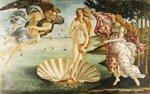
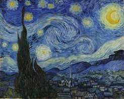
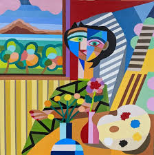

Добро пожаловать
Искусство — это зеркало эпох, в котором отражаются мысли, вера и стремления человечества. Наш сайт посвящён основным этапам развития мирового искусства.
Здесь вы найдёте описание эпох, знаменитых произведений и сможете связаться с нами для сотрудничества.
Перейти к эпохам →Избранные иллюстрации


